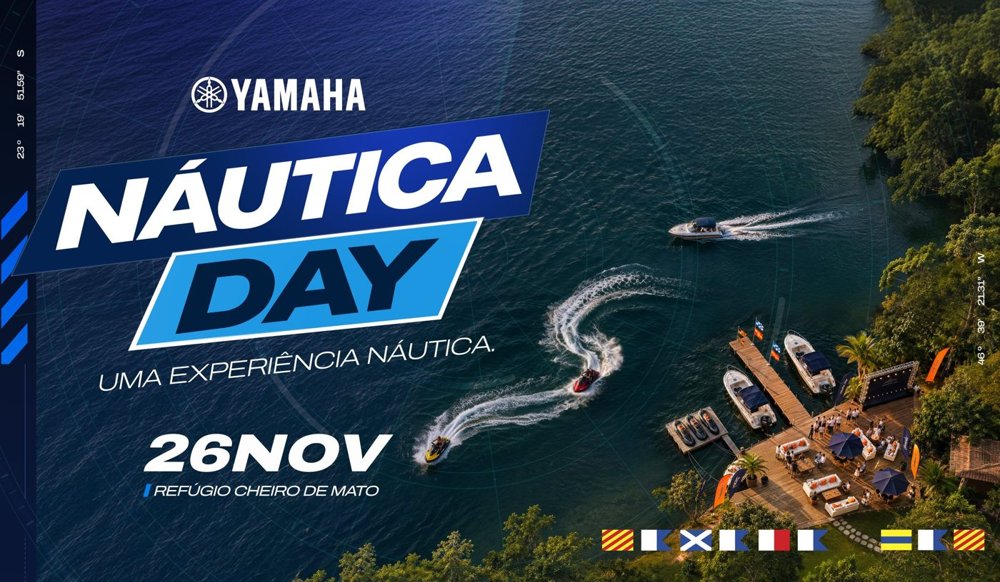
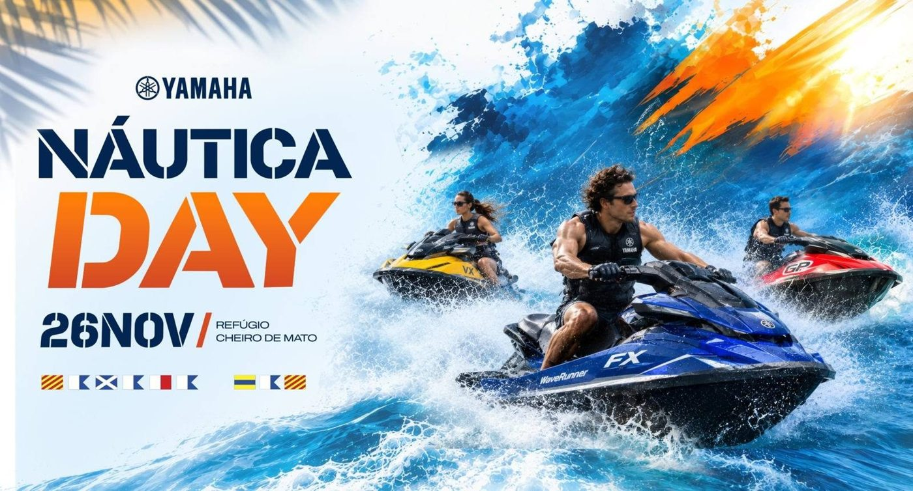
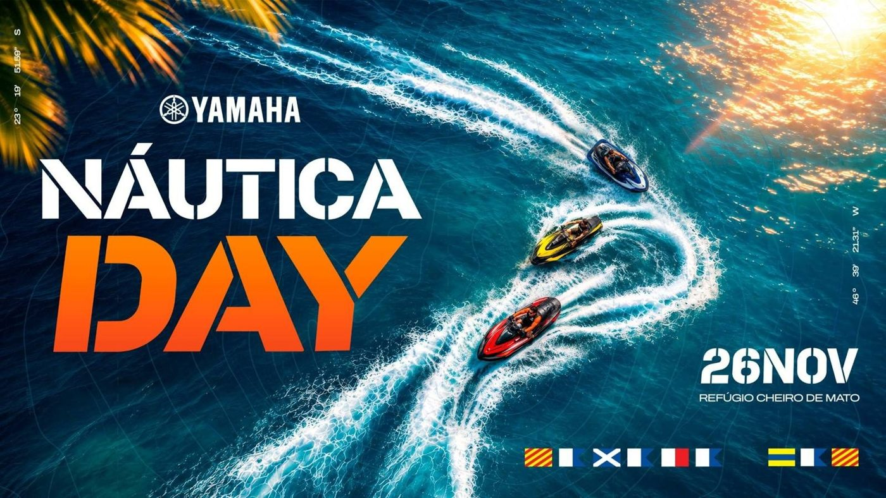
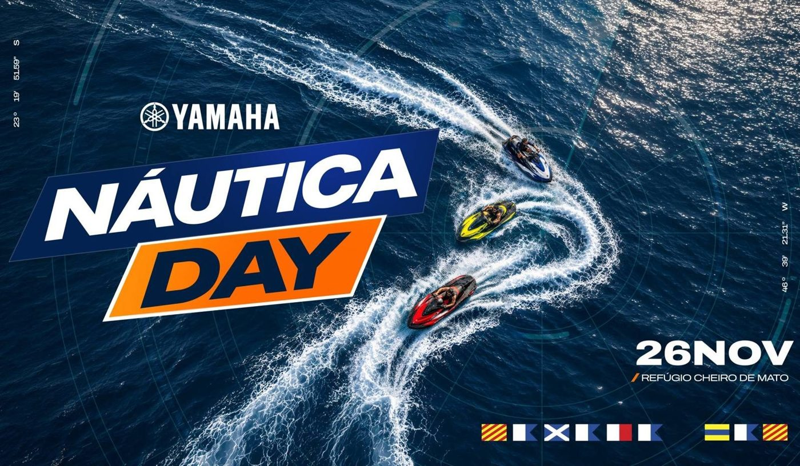

2026 · Key visual & event identity
Yamaha Náutica Day
A nautical experience day for Yamaha's boats and WaveRunners. I created three key-visual routes and a graphic language drawn from navigation — nautical flags spelling YAMAHA DAY, chart topography, coordinates, compass and radar — then rolled it out to the full piece system.
- Role
- Art direction, KV, identity, approval hub
- Agency
- Stap Feelings
- AI
- ChatGPT image for product bases (shirt, cap, credential, kit), composited with the final art · Claude to code the approval hub